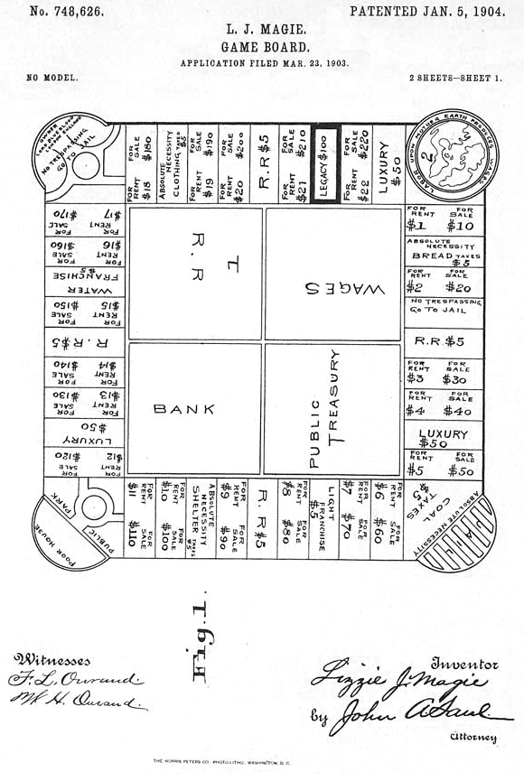
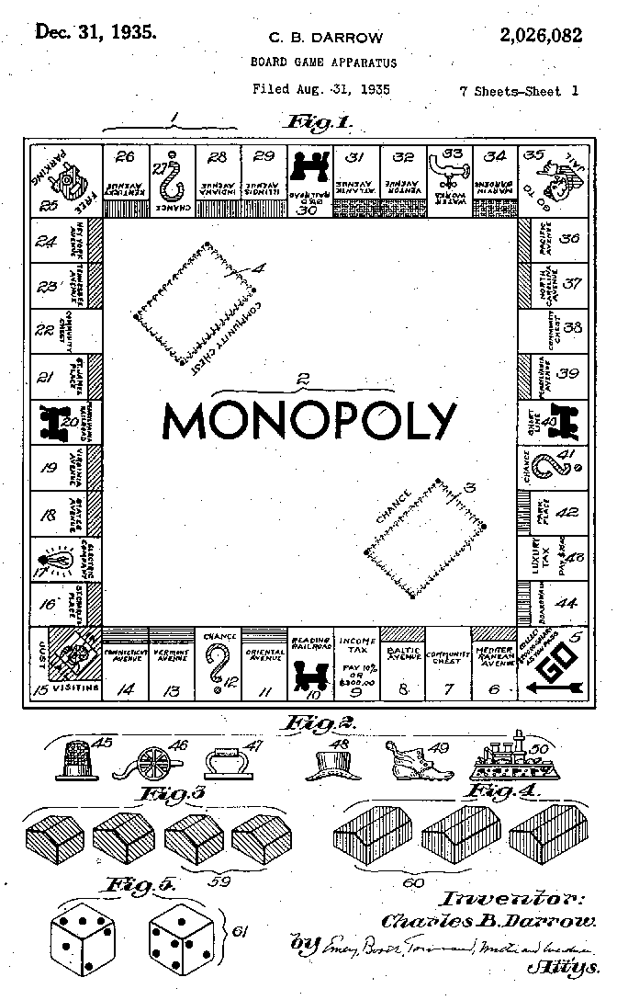

Monopoly est un jeu de négociation économique et d'élimination dans lequel les joueurs incarnent des propriétaires fonciers cherchant à pousser leurs adversaires à la rue.
La petite histoire
En 1903, Elizabeth Magie invente The Landlord's Game (Le Jeu du propriétaire foncier), un jeu de société ayant pour but de montrer la « nature antisociale du monopole sur le sol », telle qu'expliquée par l'économiste Henry George, et souhaite une propagation de celui-ci la plus large possible. Le brevet est enregistré le 5 janvier 1904. Durant les années 1910 et 1920, la diffusion de ce jeu politiquement marqué s'étend sur le territoire des États-Unis. En 1931, Charles Darrow, au chômage depuis la crise de 1929, découvre le jeu grâce à des voisins. Il crée alors un jeu très proche, son prototype étant réalisé dans une toile cirée, avec des morceaux de bois pour figurer les maisons et les hôtels, alors que les cartes sont écrites à la main et que, selon la légende, les pièces seraient issues d'un bracelet de sa femme. Il le propose à Parker Brothers, qui le refuse notamment parce qu'il était trop complexe; l'éditeur dresse au total une liste de 52 défauts rédhibitoires pour accepter le jeu. Charles Darrow commercialise alors le jeu par ses propres moyens et obtient un succès tel qu'en 1935, Parker Brothers lui achète les droits du jeu. La firme rachète ensuite les droits originaux à Elizabeth Magie en 1936 ; celle-ci les cède à bas prix, sans droits d'auteur : elle n'est pas intéressée par l'argent mais veut la diffusion du message du jeu.
 
Les règles
Ci dessus vous présentez les règles du jeu Monopoly voici une video